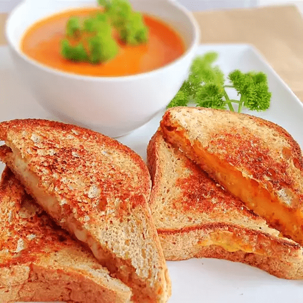

Grilled Cheese Sandwich

Description
Who doesn't love a grilled cheese sandwich. Especially if it goes with tomato soup!
Ingredients
- 4 slices white bread
- 3 tablespoons butter, divided
- 2 slices Cheddar cheese
Steps
- Preheat a nonstick skillet over medium heat. Generously butter one side of a slice of bread.
Place bread butter-side down in the hot skillet; add 1 slice of cheese. Butter a second slice
of bread on one side and place butter-side up on top of cheese.
- Cook until lightly browned on one side; flip over and continue cooking until cheese is melted.
Repeat with remaining 2 slices of bread, butter, and slice of cheese.